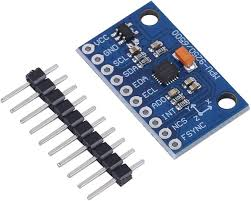
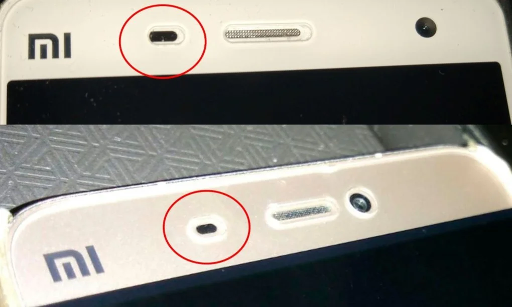
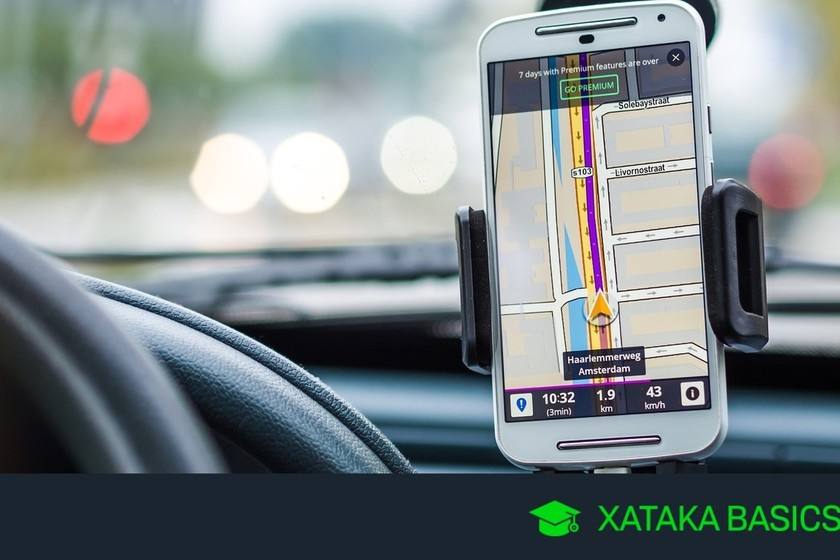
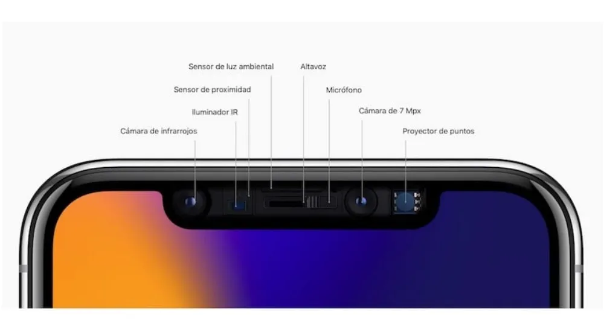
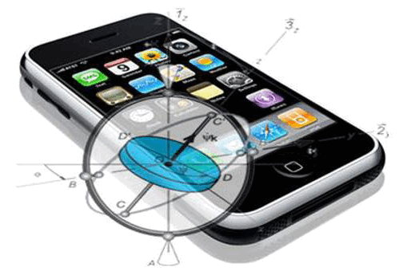

como identificar los tipos de sensores en dispositivos moviles
los sensores en telefonos permiten obtener ingormacion del entorno o del propio dispositivo,los mas comunes

detecta movimientos y cambios de inclinacion

mide la aceleracionsel dispositivo
Detecta ovjetos cercanos (apagar pantalla en llamadas)
Detecta orientacion respecto al norte magnetico
Determina la ubicacion geografica
Ajusta el brillo de la pantalla
Lector de huellas,camara para reconocimiento facial
Mide presion atmosferica (como la altitud.)
Proceso de gestios de sensores:
- Habilitacion:
- Procesamiento:
la app solicita permisos(ubicacion o reconocimiento de actividad)
se usan APIs como: andrid(sensor manager locationManager) o IOS:Core Motion Core Location
los datos se filtran o analisan (detectar pasos,orientacion,altitud).